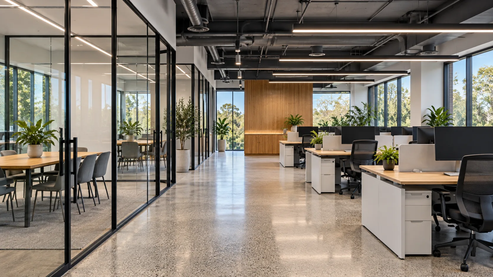

Tenant Improvements
GRIDLINE turns leased shells and second-generation spaces into finished offices, studios and shops.
Learn moreGRIDLINE builds out offices, clinics, studios and shops across metro Denver, from empty shells to busy spaces that have to stay open during the work. We coordinate with your landlord, architect and building engineer, and we put the scope and schedule in writing before the site opens.

What we do
GRIDLINE turns leased shells and second-generation spaces into finished offices, studios and shops.
Learn more
For spaces that stay open during construction.
Learn more
Clinics, dental offices, salons, fitness studios and other spaces with specific equipment, plumbing and code needs.
Learn more“Ray’s first questions were about how our people actually work. Because the loud work happened at night, we never lost a day.”

“The scope listed exactly what the landlord was paying for and what we were. That alone was worth it.”

“We stayed open the whole time. Customers barely noticed, and our staff always knew which areas were closed.”